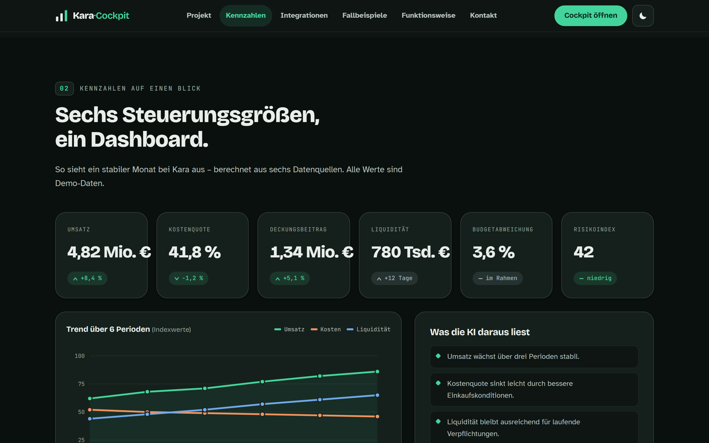

Kara·Cockpit: KI macht die Zahlen kleiner Unternehmen lesbar.
Aufgabe
Kleine Unternehmen sammeln täglich Daten in vielen getrennten Systemen – Finanzbuchhaltung, ERP, CRM, Personal und Projektmanagement. Einen schnellen, verlässlichen Überblick gewinnen sie daraus aber selten: Auswertungen sind aufwendig, Kennzahlen liegen verstreut, und für eigene KI-Projekte fehlen Zeit, Personal und Budget.
Wie kann ein kleines Unternehmen Künstliche Intelligenz kontrolliert einsetzen, um verteilte Unternehmensdaten auszuwerten, Kennzahlen und Trends zu erkennen und begründete Handlungsempfehlungen vorzubereiten – ohne eigene Data-Science-Abteilung?
Umsetzung
Das Kara·Cockpit verbindet alle Datenquellen über standardisierte MCP-Konnektoren und führt sie in einer gemeinsamen Sicht zusammen – von DATEV und lexoffice über SAP Business One und HubSpot bis zu Bank/FinTS, Personio und Excel/CSV.
Zentrale Controlling-Kennzahlen werden automatisch berechnet, Trends und Abweichungen erkannt und jede Auffälligkeit begründet – mit Quelle, Datenqualität und Risikoeinschätzung.
Leitprinzip ist „KI bereitet vor, der Mensch entscheidet". Die KI liefert Vorschläge und Belege, die Entscheidung bleibt beim Menschen.
Umgesetzt als statischer Web-Demonstrator (HTML, CSS, JavaScript, ohne Backend) am fiktiven Unternehmen „Kara". Website, Dokumentation und Erklärvideo sind selbst mit KI erstellt.
Ergebnis
Ein vorführbares Cockpit mit 6 Datenquellen, 6 Kennzahlen und 3 Szenarien (stabil, kritisch, Wachstum). Beispiel „stabil": Umsatz 4,82 Mio. € (+8,4 %), Kostenquote 41,8 %, Deckungsbeitrag 1,34 Mio. €, Liquidität 780 Tsd. €, Risikoindex 42.
- Controlling-Cockpit – alle Kennzahlen auf einer Oberfläche.
- Budget- & Kostenabweichungsanalyse – Plan-Ist-Vergleich, Kostenstellen-Ranking.
- Forecasting & Frühwarnsystem – frühe Liquiditäts- und Risikosignale.
Das komplette Cockpit ist online unter kara-cockpit.de.

